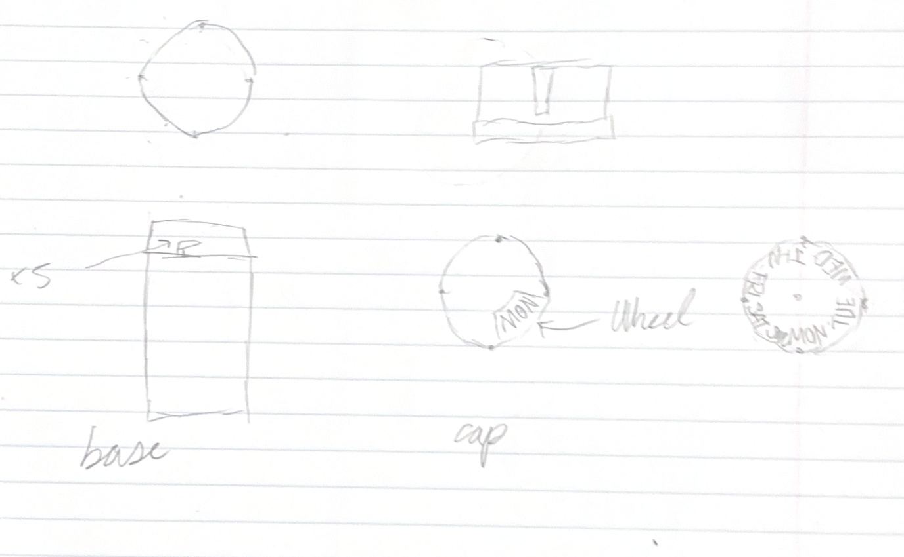

04

Design Sketches
Hand-drawn sketches were produced before any CAD work to explore component relationships and establish key dimensions.
I
Concept Sketch
Initial freehand sketch exploring how the indicator disk, cap casing, and viewing window relate to one another. Used to evaluate the core idea before committing to detailed dimensions.

II
Detailed Design Sketch
Annotated drawing with key dimensions, slot positions, thread specification, and window geometry. This drawing served as the direct reference for CAD modeling in SolidWorks.